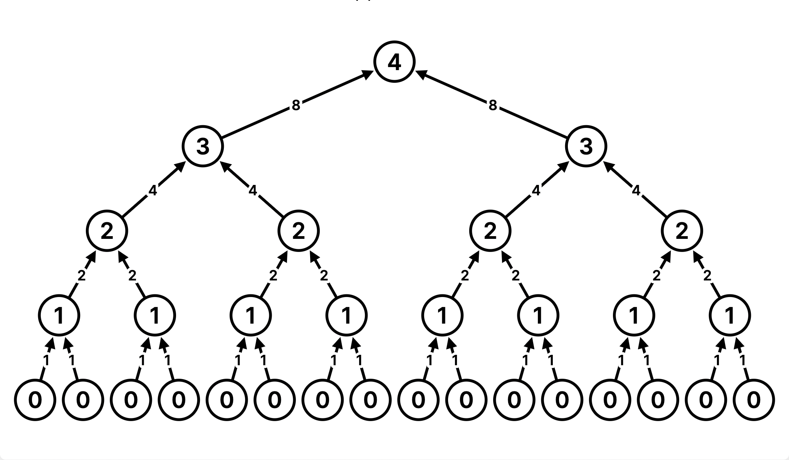

Discussion 9: Linked Lists, Efficiency, Mutable Trees
Linked Lists
There are many different implementations of sequences in Python. Today, we'll explore the linked list implementation.
A linked list is either an empty linked list, or a Link object containing a
first value and the rest of the linked list.
To check if a linked list is an empty linked list, compare it against the class
attribute Link.empty:
if link is Link.empty:
print('This linked list is empty!')
else:
print('This linked list is not empty!')You can find an implementation of the Link class below:
class Link:
"""A linked list."""
empty = ()
def __init__(self, first, rest=empty):
assert rest is Link.empty or isinstance(rest, Link)
self.first = first
self.rest = rest
def __repr__(self):
if self.rest:
rest_repr = ', ' + repr(self.rest)
else:
rest_repr = ''
return 'Link(' + repr(self.first) + rest_repr + ')'
def __str__(self):
string = '<'
while self.rest is not Link.empty:
string += str(self.first) + ' '
self = self.rest
return string + str(self.first) + '>'Q1: WWPD: Linked Lists
What would Python display?
Note: If you get stuck, try drawing out the box-and-pointer diagram for the linked list or running examples in 61A Code.
>>> link = Link(1, Link(2, Link(3)))
>>> link.first>>> link.rest.first>>> link.rest.rest.rest is Link.empty>>> link.rest = link.rest.rest
>>> link.rest.first>>> link = Link(1)
>>> link.rest = link
>>> link.rest.rest.rest.rest.first>>> link = Link(2, Link(3, Link(4)))
>>> link2 = Link(1, link)
>>> link2.first>>> link2.rest.first>>> link = Link(1000, 2000)>>> link = Link(1000, Link())>>> link = Link(Link("Hello"), Link(2))
>>> link.first>>> link = Link(Link("Hello"), Link(2))
>>> link.first.rest is Link.Empty>>> link = Link(Link("Hello"), Link(2))
>>> link.rest is Link.EmptyQ2: Convert Link
Write a function convert_link that takes in a linked list and returns the
sequence as a Python list. You may assume that the input list is shallow; that is none of the elements is another linked list.
Try to find both an iterative and recursive solution for this problem!
Run in 61A CodeChallenge: You may NOT assume that the input list is shallow, and we still want to return a flattened Python list as our output. Challenge Hint: Use the
typebuilt-in.
Q3: Duplicate Link
Write a function duplicate_link that takes in a linked list link and a value. duplicate_link will mutate link such that if there is a linked list node that has a first equal to value, that node will be duplicated. Note that you should be mutating the original link list link; you will need to create new Links, but you should not be returning a new linked list.
Run in 61A CodeNote: In order to insert a link into a linked list, you need to modify the
.restof certain links. We encourage you to draw out a doctest to visualize!
Q4: Multiply Links
Write a function that takes in a Python list of linked lists and multiplies them element-wise. It should return a new linked list.
If not all of the Link objects are of equal length, return a
linked list whose length is that of the shortest linked list given. You
may assume the Link objects are shallow linked lists, and that
lst_of_lnks contains at least one linked list.
Q5: Flip Two
Write a recursive function flip_two that takes as input a
linked list s and mutates s so that every pair
is flipped.
Efficiency
When we talk about the efficiency of a function, we are often interested in the following: as the size of the input grows, how does the runtime of the function change? And what do we mean by runtime?
Example 1: square(1) requires one primitive operation: multiplication.
square(100) also requires one. No matter what input n we pass into square, it always takes a constant number of operations (1). In other words, this function has a runtime complexity of Θ(1).
As an illustration, check out the table below:
| input | function call | return value | operations |
|---|---|---|---|
| 1 | square(1) |
1*1 | 1 |
| 2 | square(2) |
2*2 | 1 |
| ... | ... | ... | ... |
| 100 | square(100) |
100*100 | 1 |
| ... | ... | ... | ... |
| n | square(n) |
n*n | 1 |
Example 2: factorial(1) requires one multiplication, but factorial(100) requires 100 multiplications. As we increase the input size of n, the runtime (number of operations) increases linearly proportional to the input. In other words, this function has a runtime complexity of Θ(n).
As an illustration, check out the table below:
| input | function call | return value | operations |
|---|---|---|---|
| 1 | factorial(1) |
1*1 | 1 |
| 2 | factorial(2) |
2*1*1 | 2 |
| ... | ... | ... | ... |
| 100 | factorial(100) |
100*99*...*1*1 | 100 |
| ... | ... | ... | ... |
| n | factorial(n) |
n*(n-1)*...*1*1 | n |
Example 3: Consider the following function:
def bar(n):
for a in range(n):
for b in range(n):
print(a,b)bar(1) requires 1 print statements, while bar(100) requires 100*100 = 10000 print statements (each time a increments, we have 100 print statements due to the inner for loop). Thus, the runtime increases quadratically proportional to the input. In other words, this function has a runtime complexity of Θ(n^2).
| input | function call | operations (prints) |
|---|---|---|
| 1 | bar(1) |
1 |
| 2 | bar(2) |
4 |
| ... | ... | ... |
| 100 | bar(100) |
10000 |
| ... | ... | ... |
| n | bar(n) |
n^2 |
Example 4: Consder the following function:
def rec(n):
if n == 0:
return 1
else:
return rec(n - 1) + rec(n - 1)rec(1) requires one addition, as it returns rec(0) + rec(0), and rec(0) hits the base case and requires no further additions. but rec(4) requires 2^4 - 1 = 15 additions. To further understand the intuition, we can take a look at the recurisve tree below. To get rec(4), we need one addition. We have two calls to rec(3), which each require one addition, so this level needs two additions. Then we have four calls to rec(2), so this level requires four additions, and so on down the tree. In total, this adds up to 1 + 2 + 4 + 8 = 15 additions.

As we increase the input size of n, the runtime (number of operations) increases exponentially proportional to the input. In other words, this function has a runtime complexity of Θ(2^n).
As an illustration, check out the table below:
| input | function call | return value | operations |
|---|---|---|---|
| 1 | rec(1) |
2 | 1 |
| 2 | rec(2) |
4 | 3 |
| ... | ... | ... | ... |
| 10 | rec(10) |
1024 | 1023 |
| ... | ... | ... | ... |
| n | rec(n) |
2^n |
2^n |
Here are some general guidelines for finding the order of growth for the runtime of a function:
If the function is recursive or iterative, you can subdivide the problem as seen above:
- Count the number of recursive calls/iterations that will be made in terms of input size
n. - Find how much work is done per recursive call or iteration in terms of input size
n. - The answer is usually the product of the above two, but be sure to pay attention to control flow!
- Count the number of recursive calls/iterations that will be made in terms of input size
- If the function calls helper functions that are not constant-time, you need to take the runtime of the helper functions into consideration.
- We can ignore constant factors. For example
1000000nandnsteps are both linear. - We can also ignore smaller factors. For example if
hcallsfandg, andfis Quadratic whilegis linear, thenhis Quadratic. For the purposes of this class, we take a fairly coarse view of efficiency. All the problems we cover in this course can be grouped as one of the following:
- Constant: the amount of time does not change based on the input size. Rule:
n --> 2nmeanst --> t. - Logarithmic: the amount of time changes based on the logarithm of the input size. Rule:
n --> 2nmeanst --> t + k. - Linear: the amount of time changes with direct proportion to the size of the input. Rule:
n --> 2nmeanst --> 2t. - Quadratic: the amount of time changes based on the square of the input size. Rule:
n --> 2nmeanst --> 4t. - Exponential: the amount of time changes with a power of the input size. Rule:
n --> n + 1meanst --> 2t.
- Constant: the amount of time does not change based on the input size. Rule:
Q6: The First Order...of Growth
What is the efficiency of rey?
def rey(finn):
poe = 0
while finn >= 2:
poe += finn
finn = finn / 2
returnChoose one of:
- Constant
- Logarithmic
- Linear
- Quadratic
- Exponential
- None of these
What is the efficiency of mod_7?
def mod_7(n):
if n % 7 == 0:
return 0
else:
return 1 + mod_7(n - 1)Choose one of:
- Constant
- Logarithmic
- Linear
- Quadratic
- Exponential
- None of these
Additional Practice: Trees
Q7: Find Paths
Hint: This question is similar to
find_pathon Discussion 05.
Define the procedure find_paths that, given a Tree t and an entry, returns a list of lists containing the nodes along each path from the root of t to entry. You may return the paths in any order.
For instance, for the following tree tree_ex, find_paths should behave as specified in the function doctests.